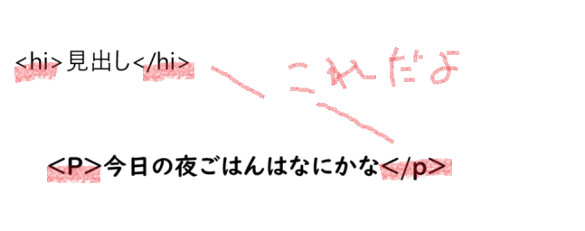

HTMLに関して
HTMLとは簡単にいうと、コンピューターが理解できるマークアップをするための言葉[マークアップ]とは文章構成の指示のことを指します。

HTMLタグの種類
- h：見出しに使う。
- ｐ：段落につかう 例 ふはははｈ＜ｐ３＞僕は天才✨＜/ｐ３＞
- ａ：リンクを挿入 例 ＜A href＝”https://ruru-325.github.io/xbp/”＞るーさんのページ＜/A＞
- li：箇条書き 例：私の好きな人って誰でしょう
- 山田涼介
- 佐藤勝利
- strong：太文字で強調 ＜STRONG＞山田涼介愛してる＜STRONG＞
- ul＆OL：リストの作成。・・で区切るか１．２．で区切るかで使い分ける
例 ＜ｈ３＞僕は天才✨＜/ｈ３＞
僕は天才✨
このように写し出されます！！
ふはははｈ
僕は天才✨
実行 るーさんのページ 押してみて実行！
＜li＞山田涼介＜li＞ ＜li＞佐藤勝利＜li＞
実行：私の好きな人って誰でしょう
実行:山田涼介様愛してる

まとめ
HTMLとはとにかくプログラミング言語みたいなタグ挟んで使うもの！
Gitはファイルの履歴やバージョン管理してくれる便利なシステムのひとつ！